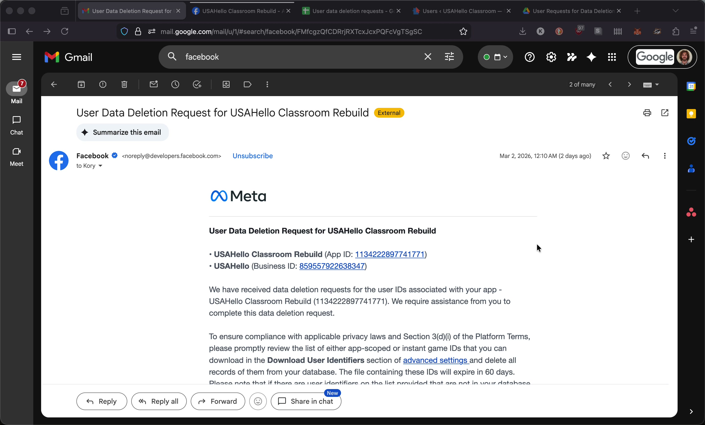
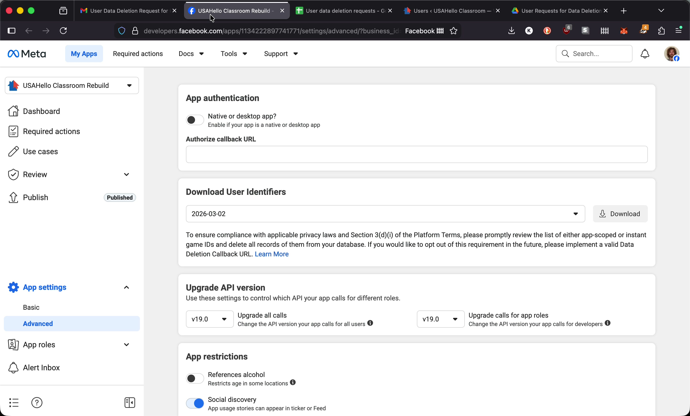
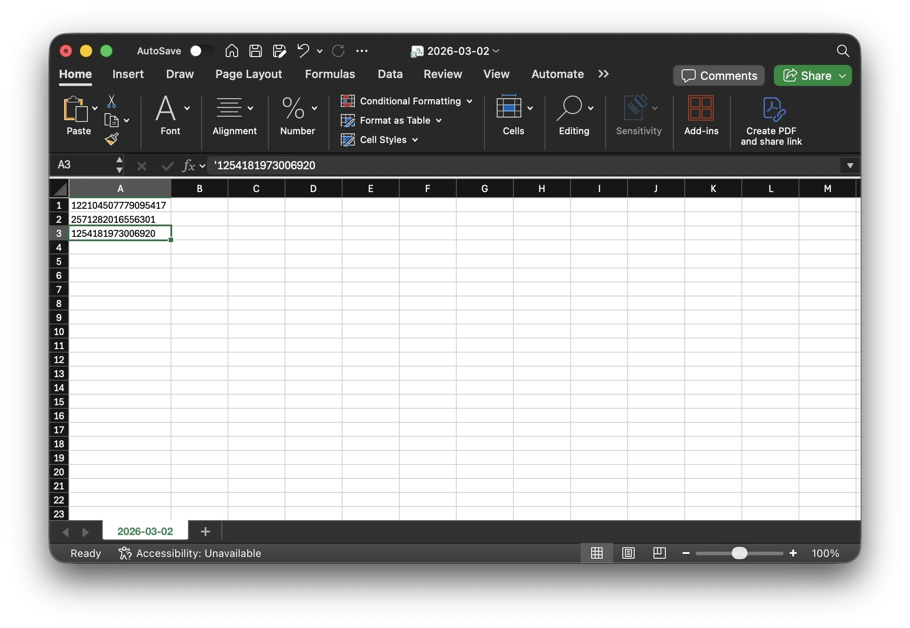
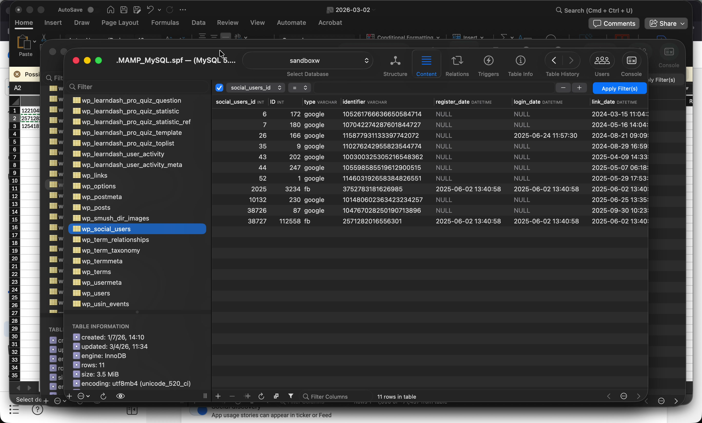
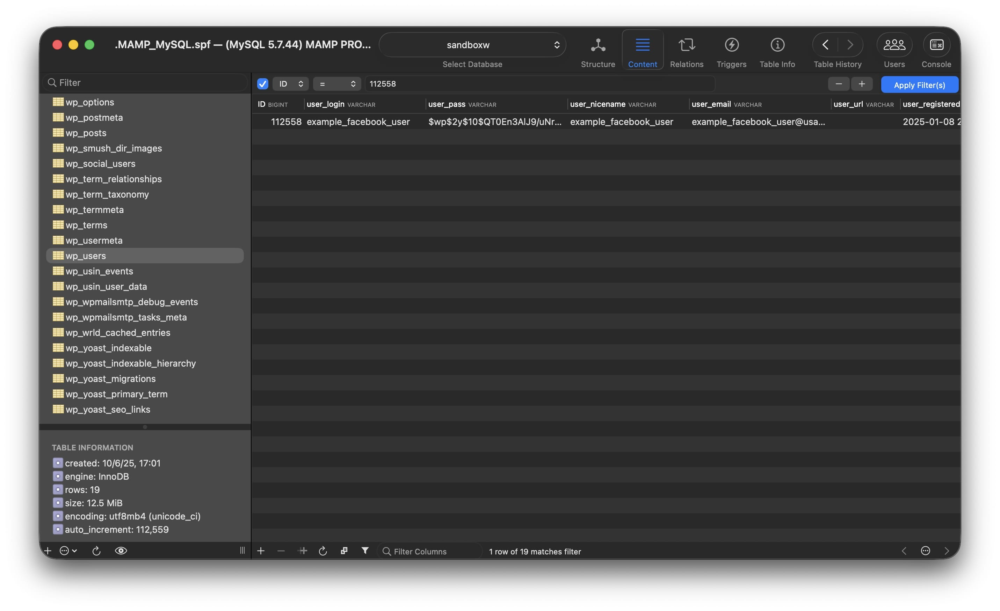
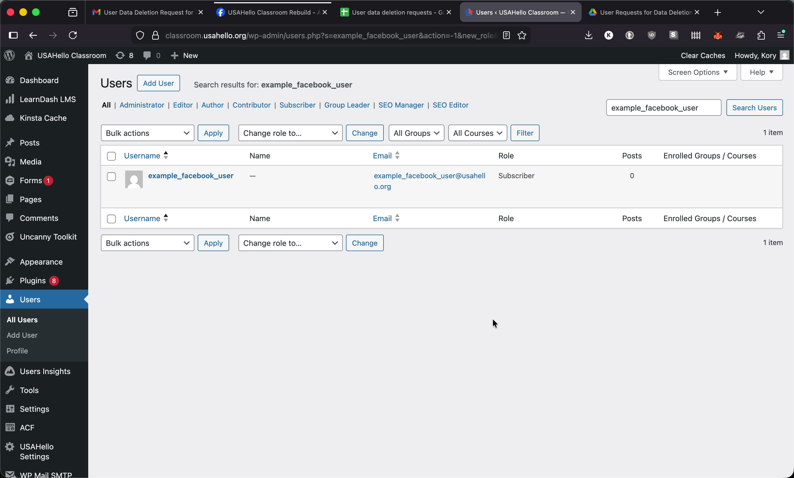
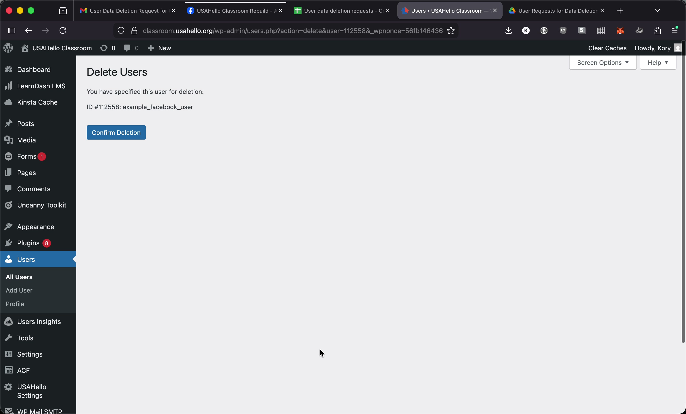
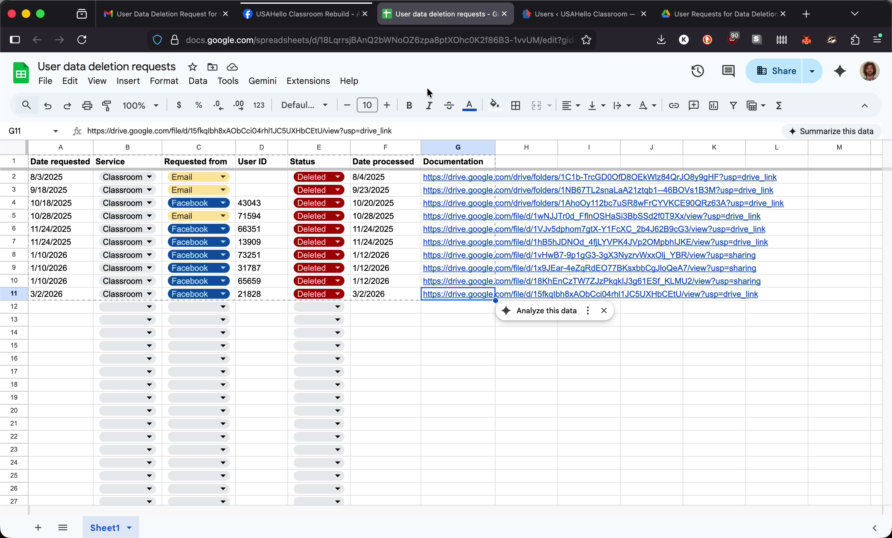

Student User Data Deletion Requests
Overview
When a student requests deletion of their student data it might come directly from the student to our privacy@usahello.org email or our classroom@usahello.org email, otherwise it'll be an email from Facebook/Meta. This guide walks through how to process those request: identifying the affected user, deleting them from WordPress, and recording the action in our Google Drive log.
Step 1: Receive the Email Notification
When a deletion request comes in, you will receive an email directly from the student or from Facebook/Meta. For data deletion requests that come directly from a student, skip to Step 5.

Step 2: Download User Identifiers from the Meta Developer Dashboard
Click the Download Data button at the bottom of the email. This opens the Meta developer dashboard.

In the Download User Identifiers panel near the top of the dashboard, click the Download button. This downloads a CSV file.
Step 3: Review the CSV
Open the downloaded CSV file. It contains a list of numerical Facebook ID values in a single column.

Note: Facebook states that not all IDs in the CSV will necessarily match a user on our website — that is expected.
Step 4: Look Up Each ID in the Database
The Facebook login plugin uses a custom database table (wp_social_users) that stores Facebook identifier values alongside the corresponding WordPress user ID. Use a SQL GUI such as SQL Ace to query this table.
In the wp_social_users table, filter by the identifier column using the IDs from the CSV.

If a match is found, note the associated WordPress user ID. Be sure to take a screenshot of the (wp_social_users) table filtered by the matching "identifier", you'll want to retain this for documentation purposes.
You can then search the wp_users table by that ID to confirm the user record.

Step 5: Delete the User in WordPress
Using the matched user's email address or username, search for them in the WordPress admin dashboard under Users.

Click the user to open their profile, then click Delete. WordPress will display a confirmation screen. Take a screenshot of this screen for documentation purposes.

Confirm the deletion.
Step 6: Record the Request in Google Drive
All deletion requests are logged in the shared Google Drive folder. Within that folder:
-
Open the tracking sheet and add a new row with:
- Date the request was received
- Date it was processed
- Status
- Link to the documentation/screenshots
-
In the year/month subfolder, drag in the appropriate screenshots for the user:
- The filtered
wp_social_userstable showing the matched identifier (if it's a Facebook data deletion request) - The delete user confirmation screen
- The filtered
